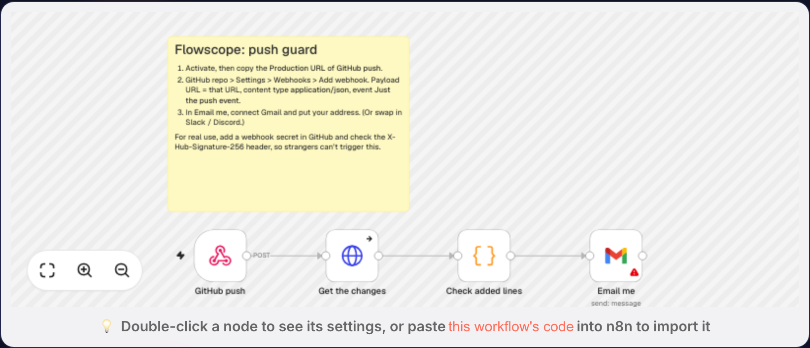

🪐 Flowscope · built on n8n
Flowscope
See what your automations touch. Fix what’s exposed. Let n8n keep watch.
THE PROBLEM
A dozen apps, wired together in an afternoon.
Nobody can see them all.
🔑
Keys pasted into nodes
Share or export the workflow and the key goes with it.
🚪
Webhooks left open
Anyone with the URL can run your workflow.
🤫
Silent failures
It breaks at 3 a.m. and nobody hears about it.
THE IDEA
☀️ Sun = your workflow🪐 Planets = the apps it uses☄️ Hazards = problems
THE 🪄 FIXER
Others: a reportFlowscope: the fixed workflow, ready to paste back into n8n
HOW IT’S BUILT
🧠 Brain in your browser. ❤️ Heart in n8n.
🧠
Brain: rules in your browserreads · scores · writes the fix
❤️ n8n5 workflows
🐙 GitHub API
🧠 AI Agent node
📧 Gmail alerts
⏰ Every Monday
🤖 MCP: Claude & Cursor
🔭 SCOUT · REPO SCANNER · LIVE
WebhookHTTP Request: GitHubCodeAI AgentRespond to Webhook
🛡️ GUARD · EVERY GIT PUSH · LIVE

caught a key in 2.2 s
🚨 SIREN & 🕵️ INSPECTOR
Error Trigger → GmailSchedule → n8n API → Code → Gmail
🤖 BUDDY · MCP SERVER
Claude, scan my repo for leaked keys
🪐 Calling Flowscope through n8n… 2 keys found, here’s how to fix them.
🛰️ FOR VIBE CODERS AND STUDENTS
🟢 Alive🟡 Getting quiet🔴 Forgotten, keys and all
WHY NOT JUST ASK AN AI?
💬 An AI chat
- Runs when you remember to ask
- You paste your keys in
- Gives advice to copy by hand
🪐 Flowscope
- Runs on every push, failure, Monday
- Checks in your browser
- Hands back the fixed workflow
Claude is who you ask. Flowscope is who’s watching.
Other scanners report.
Flowscope fixes.
Built on n8n, and it checks n8n · arushish5-cyber.github.io/flowscope